Ver código
options(
knitr.table.format = "html",
scipen = 999
)options(
knitr.table.format = "html",
scipen = 999
)ipak <- function(pkg){
options(repos = c(CRAN = "https://cloud.r-project.org"))
new.pkg <- pkg[!(pkg %in% rownames(installed.packages()))]
if(length(new.pkg)) install.packages(new.pkg, dependencies = TRUE)
invisible(lapply(pkg, function(p)
suppressPackageStartupMessages(library(p, character.only = TRUE))
))
}
packages <- c("tidyverse","kableExtra","readxl",
"palmerpenguins")
ipak(packages)library(readxl)
educacion <- read_excel("educacion.xlsx")Mostrar algunas filas del Dataset
head(educacion,4)# A tibble: 4 × 10
ID Genero Nivel_Educativo Estrato Cursos Horas Promedio `Asistencia (%)`
<dbl> <chr> <chr> <chr> <dbl> <dbl> <dbl> <dbl>
1 1 Femenino Universidad Alto 5 26.8 4.37 51.3
2 2 Femenino Universidad Bajo 4 9.05 4.9 51.1
3 3 Femenino Secundaria Medio 8 28.2 1.26 92.4
4 4 Femenino Universidad Bajo 6 17.9 1.96 64.8
# ℹ 2 more variables: Tecnologia <chr>, Satisfaccion <chr>Estructura de las variables
glimpse(educacion)Rows: 300
Columns: 10
$ ID <dbl> 1, 2, 3, 4, 5, 6, 7, 8, 9, 10, 11, 12, 13, 14, 15, 16…
$ Genero <chr> "Femenino", "Femenino", "Femenino", "Femenino", "Masc…
$ Nivel_Educativo <chr> "Universidad", "Universidad", "Secundaria", "Universi…
$ Estrato <chr> "Alto", "Bajo", "Medio", "Bajo", "Alto", "Bajo", "Baj…
$ Cursos <dbl> 5, 4, 8, 6, 4, 2, 2, 6, 8, 4, 6, 2, 2, 6, 8, 5, 1, 8,…
$ Horas <dbl> 26.82, 9.05, 28.19, 17.86, 15.87, 27.63, 3.31, 14.81,…
$ Promedio <dbl> 4.37, 4.90, 1.26, 1.96, 3.60, 4.58, 1.47, 3.89, 4.65,…
$ `Asistencia (%)` <dbl> 51.29, 51.06, 92.35, 64.85, 57.01, 76.11, 84.15, 93.2…
$ Tecnologia <chr> "Bajo", "Bajo", "Bajo", "Medio", "Alto", "Medio", "Ba…
$ Satisfaccion <chr> "Muy alta", "Media", "Muy alta", "Muy alta", "Muy baj…Número de variables
educacion %>% names %>% length[1] 10Nombre de las variables
names(educacion) [1] "ID" "Genero" "Nivel_Educativo" "Estrato"
[5] "Cursos" "Horas" "Promedio" "Asistencia (%)"
[9] "Tecnologia" "Satisfaccion" Transformar variables
educacion <- educacion %>%
mutate(Nivel_Educativo = parse_factor(as.character(Nivel_Educativo),
levels = c("Primaria", "Secundaria", "Universidad"),
ordered = T)) %>%
mutate(Estrato = parse_factor(as.character(Estrato),
levels = c('Bajo', 'Medio', 'Alto'),
ordered = T))Nueva estructura de las variables
glimpse(educacion)Rows: 300
Columns: 10
$ ID <dbl> 1, 2, 3, 4, 5, 6, 7, 8, 9, 10, 11, 12, 13, 14, 15, 16…
$ Genero <chr> "Femenino", "Femenino", "Femenino", "Femenino", "Masc…
$ Nivel_Educativo <ord> Universidad, Universidad, Secundaria, Universidad, Un…
$ Estrato <ord> Alto, Bajo, Medio, Bajo, Alto, Bajo, Bajo, Medio, Med…
$ Cursos <dbl> 5, 4, 8, 6, 4, 2, 2, 6, 8, 4, 6, 2, 2, 6, 8, 5, 1, 8,…
$ Horas <dbl> 26.82, 9.05, 28.19, 17.86, 15.87, 27.63, 3.31, 14.81,…
$ Promedio <dbl> 4.37, 4.90, 1.26, 1.96, 3.60, 4.58, 1.47, 3.89, 4.65,…
$ `Asistencia (%)` <dbl> 51.29, 51.06, 92.35, 64.85, 57.01, 76.11, 84.15, 93.2…
$ Tecnologia <chr> "Bajo", "Bajo", "Bajo", "Medio", "Alto", "Medio", "Ba…
$ Satisfaccion <chr> "Muy alta", "Media", "Muy alta", "Muy alta", "Muy baj…Análisis de frecuencias del género de los encuestados
# Cargar las librerías necesarias
library(ggplot2)
library(dplyr)
library(readxl)
# Calcular los porcentajes de cada categoría en la variable GENERO
genero_counts <- educacion %>%
dplyr::count(Genero) %>%
mutate(porcentaje = n / sum(n) * 100)
# Crear el diagrama de barras
ggplot(genero_counts, aes(x = Genero, y = porcentaje, fill = Genero)) +
geom_bar(stat = "identity") +
labs(title = "Distribución porcentual del genero de los encuestados",
x = "Genero",
y = "Porcentaje") +
theme_minimal() +
theme(legend.position = "none") +
geom_text(aes(label = sprintf("%.1f%%", porcentaje)),
vjust = -0.5,
color = "black",
size = 3.5)
# Cargar las librerías necesarias
# Cargar las librerías necesarias
library(ggplot2)
library(dplyr)
library(readxl)
# Calcular los porcentajes de cada categoría en la variable GENERO
genero_counts <- educacion %>%
dplyr::count(Genero) %>%
mutate(porcentaje = n / sum(n) * 100)
# Crear el diagrama circular
ggplot(genero_counts, aes(x = "", y = porcentaje, fill = Genero)) +
geom_bar(stat = "identity", width = 1) +
coord_polar("y") +
labs(title = "Distribución porcentual del genero de los encuestados") +
theme_minimal() +
theme(axis.title.x = element_blank(),
axis.title.y = element_blank(),
panel.grid = element_blank(),
axis.text.x = element_blank()) +
geom_text(aes(label = sprintf("%.1f%%", porcentaje)),
position = position_stack(vjust = 0.5),
color = "white",
size = 4)
La distribución de los 300 encuestados muestra que el 53,67 % corresponde al género femenino (161 participantes), mientras que el 46,33 % corresponde al masculino (139 participantes). Se evidencia una mayor participación femenina, con una diferencia de 7,34 puntos porcentuales. En general, la muestra presenta una distribución relativamente equilibrada, lo que permite caracterizar la composición de los participantes en el estudio sobre educación matemática.
Distribución de frecuencias de los encuestados según el nivel educativo
# Crear la tabla original
tabla <- tibble(Genero = educacion$Genero) %>%
group_by(Genero) %>%
summarise(fi = n()) %>%
mutate(
hi = round(fi/sum(fi), 4),
Porcentaje = paste0(hi*100, "%"),)
# Convertir las columnas a character para evitar conflictos
tabla <- tabla %>% mutate(
Genero = as.character(Genero))
# Añadir la fila de totales
totales <- tibble(
Genero = "Total",
fi = sum(tabla$fi),
hi = round(sum(tabla$hi), 4),
Porcentaje = paste0(round(sum(tabla$hi) * 100, 2), "%"))
# Combinar la tabla con los totales
tabla_final <- bind_rows(tabla, totales)
# Mostrar la tabla final con kable
tabla_final %>%
knitr::kable(
col.names = c(
"Genero",
"<i>f</i><sub>i</sub>",
"<i>h</i><sub>i</sub>",
"Porcentaje"
),
align = c("l", "c", "c", "c"),
escape = FALSE
)| Genero | fi | hi | Porcentaje |
|---|---|---|---|
| Femenino | 161 | 0.5367 | 53.67% |
| Masculino | 139 | 0.4633 | 46.33% |
| Total | 300 | 1.0000 | 100% |
# Cargar las librerías necesarias
library(ggplot2)
library(dplyr)
library(readxl)
# Calcular los porcentajes de cada categoría en la variable GENERO
genero_counts <- educacion %>%
dplyr::count(Genero) %>%
mutate(porcentaje = n / sum(n) * 100)
# Crear el diagrama de barras
ggplot(genero_counts, aes(x = Genero, y = porcentaje, fill = Genero)) +
geom_bar(stat = "identity") +
labs(title = "Distribución porcentual del genero de los encuestados",
x = "Genero",
y = "Porcentaje") +
theme_minimal() +
theme(legend.position = "none") +
geom_text(aes(label = sprintf("%.1f%%", porcentaje)),
vjust = -0.5,
color = "black",
size = 3.5)
En el estudio sobre educación matemática en diferentes campos, el 35 % de los 300 participantes tiene educación secundaria, el 34 % universitaria y el 31 % primaria. La frecuencia acumulada muestra que el 66 % se concentra entre los niveles de primaria y secundaria, mientras que el 100 % se alcanza al incluir el nivel universitario. Estos resultados permiten caracterizar el nivel educativo de los encuestados y contextualizar el análisis de la investigación.
Distribución de frecuencias de los encuestados según el Estrato
tabla <- tibble(ESTRATO = educacion$Estrato
) %>%
group_by(ESTRATO) %>%
summarise(fi = n()) %>%
mutate(
hi = round(fi/sum(fi), 4),
Porcentaje = paste0(hi*100, "%"),
Fi = cumsum(fi),
Hi = cumsum(hi)
)
# Convertir las columnas Fucion, Fi, y Hi a character para evitar conflictos
tabla <- tabla %>% mutate(
ESTRATO = as.character(ESTRATO),
Fi = as.character(Fi),
Hi = as.character(Hi)
)
# Añadir la fila de totales, dejando Fi y Hi vacíos
totales <- tibble(
ESTRATO = "Total",
fi = sum(tabla$fi),
hi = round(sum(tabla$hi), 4),
Porcentaje = paste0(round(sum(tabla$hi) * 100, 2), "%"),
Fi = "", # Puedes dejar en blanco o usar un valor numérico
Hi = "" # Puedes dejar en blanco o usar un valor numérico
)
# Combinar la tabla con los totales
tabla_final <- bind_rows(tabla, totales)
# Mostrar la tabla final con kable
tabla_final %>%
knitr::kable(
col.names = c(
"El estrato",
"<i>f</i><sub>i</sub>",
"<i>h</i><sub>i</sub>",
"Porcentaje",
"<i>F</i><sub>i</sub>",
"<i>H</i><sub>i</sub>"
),
align = c("l", "c", "c", "c", "c", "c"),
escape = FALSE
)| El estrato | fi | hi | Porcentaje | Fi | Hi |
|---|---|---|---|---|---|
| Bajo | 97 | 0.3233 | 32.33% | 97 | 0.3233 |
| Medio | 102 | 0.3400 | 34% | 199 | 0.6633 |
| Alto | 101 | 0.3367 | 33.67% | 300 | 1 |
| Total | 300 | 1.0000 | 100% |
# Cargar las librerías necesarias
library(ggplot2)
library(dplyr)
library(readxl)
# Calcular los porcentajes de cada categoría en la variable DEPORTE
estrato_counts <- educacion %>%
dplyr::count(Estrato) %>%
mutate(porcentaje = n / sum(n) * 100)
# Crear el diagrama de barras
ggplot(estrato_counts, aes(x = Estrato, y = porcentaje, fill = Estrato)) +
geom_bar(stat = "identity") +
labs(title = "Distribución porcentual del Estrato",
x = "Estrato",
y = "Porcentaje") +
theme_minimal() +
theme(legend.position = "none") +
geom_text(aes(label = sprintf("%.1f%%", porcentaje)),
vjust = -0.5,
color = "black",
size = 3.5)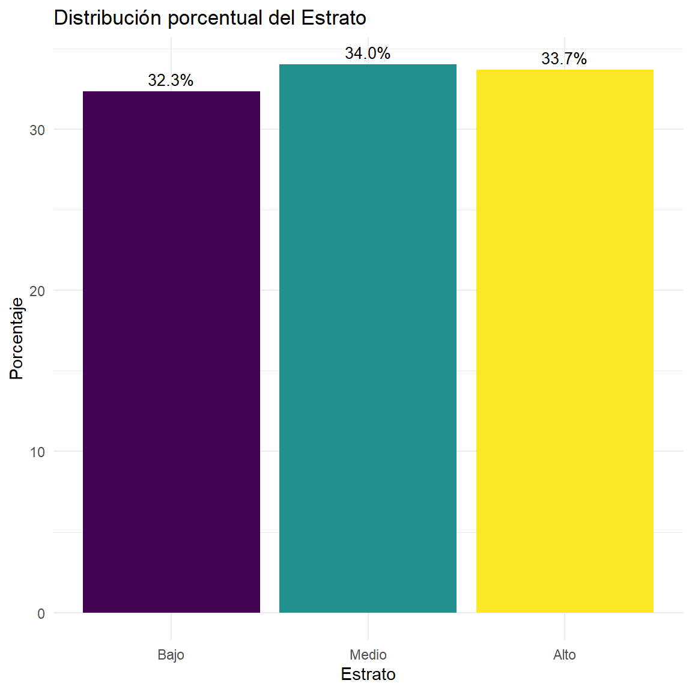
La distribución de los encuestados según el estrato socioeconómico evidencia una participación similar entre las tres categorías: bajo (32,33 %), medio (34 %) y alto (33,67 %). De acuerdo con los valores acumulados, aproximadamente dos tercios de los participantes (66,33 %) pertenecen a los estratos bajo y medio. Esta distribución permite reconocer la diversidad socioeconómica de la muestra, un aspecto relevante para contextualizar el estudio de la educación matemática en diferentes campos.
Distribución de frecuencias de los encuestados según la Tecnologia
# Crear la tabla original
tabla <- tibble(TECNOLOGIA = educacion$Tecnologia
) %>%
group_by(TECNOLOGIA) %>%
summarise(fi = n()) %>%
mutate(
hi = round(fi/sum(fi), 4),
Porcentaje = paste0(hi*100, "%"),
Fi = cumsum(fi),
Hi = cumsum(hi)
)
# Convertir las columnas Fucion, Fi, y Hi a character para evitar conflictos
tabla <- tabla %>% mutate(
TECNOLOGIA = as.character(TECNOLOGIA),
Fi = as.character(Fi),
Hi = as.character(Hi)
)
# Añadir la fila de totales, dejando Fi y Hi vacíos
totales <- tibble(
TECNOLOGIA = "Total",
fi = sum(tabla$fi),
hi = round(sum(tabla$hi), 4),
Porcentaje = paste0(round(sum(tabla$hi) * 100, 2), "%"),
Fi = "", # Puedes dejar en blanco o usar un valor numérico
Hi = "" # Puedes dejar en blanco o usar un valor numérico
)
# Combinar la tabla con los totales
tabla_final <- bind_rows(tabla, totales)
# Mostrar la tabla final con kable
tabla_final %>%
knitr::kable(
col.names = c(
"La Tecnologia",
"<i>f</i><sub>i</sub>",
"<i>h</i><sub>i</sub>",
"Porcentaje",
"<i>F</i><sub>i</sub>",
"<i>H</i><sub>i</sub>"
),
align = c("l", "c", "c", "c", "c", "c"),
escape = FALSE
)| La Tecnologia | fi | hi | Porcentaje | Fi | Hi |
|---|---|---|---|---|---|
| Alto | 80 | 0.2667 | 26.67% | 80 | 0.2667 |
| Bajo | 112 | 0.3733 | 37.33% | 192 | 0.64 |
| Medio | 108 | 0.3600 | 36% | 300 | 1 |
| Total | 300 | 1.0000 | 100% |
# Cargar las librerías necesarias
library(ggplot2)
library(dplyr)
library(readxl)
# Calcular los porcentajes de cada categoría en la variable DEPORTE
Tecnologia_counts <- educacion %>%
dplyr::count(Tecnologia ) %>%
mutate(porcentaje = n / sum(n) * 100)
# Crear el diagrama de barras
ggplot(Tecnologia_counts, aes(x = Tecnologia , y = porcentaje, fill = Tecnologia )) +
geom_bar(stat = "identity") +
labs(title = "Distribución porcentual de la Tecnologia ",
x = "Tecnologia ",
y = "Porcentaje") +
theme_minimal() +
theme(legend.position = "none") +
geom_text(aes(label = sprintf("%.1f%%", porcentaje)),
vjust = -0.5,
color = "black",
size = 3.5)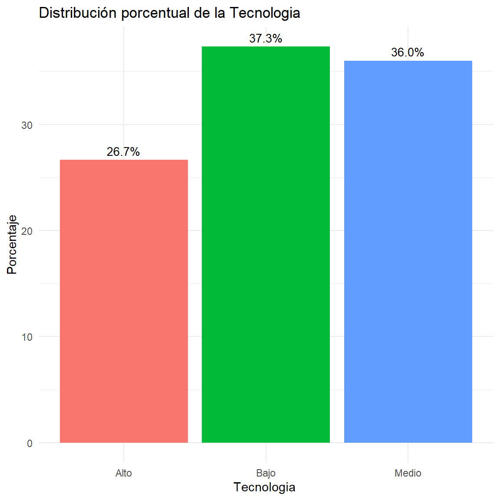
La distribución muestra que el 37,33 % de los encuestados presenta un nivel bajo de acceso a la tecnología, el 36 % un nivel medio y el 26,67 % un nivel alto. La frecuencia acumulada indica que el 73,33 % se encuentra entre los niveles bajo y medio, mientras que el 100 % corresponde al total de los participantes. Se evidencia una mayor concentración en los niveles bajo y medio, con una diferencia de 10,66 puntos porcentuales respecto al nivel alto.
Distribución de frecuencias de los encuestados según el Nivel de Satisfaccion
ribución de frecuencias de los encuestados según la Tecnologia
# Crear la tabla original
tabla <- tibble(SATI = educacion$Satisfaccion
) %>%
group_by(SATI) %>%
summarise(fi = n()) %>%
mutate(
hi = round(fi/sum(fi), 4),
Porcentaje = paste0(hi*100, "%"),
Fi = cumsum(fi),
Hi = cumsum(hi)
)
# Convertir las columnas Fucion, Fi, y Hi a character para evitar conflictos
tabla <- tabla %>% mutate(
SATI = as.character(SATI),
Fi = as.character(Fi),
Hi = as.character(Hi)
)
# Añadir la fila de totales, dejando Fi y Hi vacíos
totales <- tibble(
SATI = "Total",
fi = sum(tabla$fi),
hi = round(sum(tabla$hi), 4),
Porcentaje = paste0(round(sum(tabla$hi) * 100, 2), "%"),
Fi = "", # Puedes dejar en blanco o usar un valor numérico
Hi = "" # Puedes dejar en blanco o usar un valor numérico
)
# Combinar la tabla con los totales
tabla_final <- bind_rows(tabla, totales)
# Mostrar la tabla final con kable
tabla_final %>%
knitr::kable(
col.names = c(
"Nivel de satifación",
"<i>f</i><sub>i</sub>",
"<i>h</i><sub>i</sub>",
"Porcentaje",
"<i>F</i><sub>i</sub>",
"<i>H</i><sub>i</sub>"
),
align = c("l", "c", "c", "c", "c", "c"),
escape = FALSE
)| Nivel de satifación | fi | hi | Porcentaje | Fi | Hi |
|---|---|---|---|---|---|
| Alta | 65 | 0.2167 | 21.67% | 65 | 0.2167 |
| Baja | 65 | 0.2167 | 21.67% | 130 | 0.4334 |
| Media | 55 | 0.1833 | 18.33% | 185 | 0.6167 |
| Muy alta | 67 | 0.2233 | 22.33% | 252 | 0.84 |
| Muy baja | 48 | 0.1600 | 16% | 300 | 1 |
| Total | 300 | 1.0000 | 100% |
# Cargar las librerías necesarias
library(ggplot2)
library(dplyr)
library(readxl)
# Calcular los porcentajes de cada categoría en la variable DEPORTE
Satisfaccion_counts <- educacion %>%
dplyr::count(Satisfaccion) %>%
mutate(porcentaje = n / sum(n) * 100)
# Crear el diagrama de barras
ggplot(Satisfaccion_counts, aes(x = Satisfaccion , y = porcentaje, fill = Satisfaccion )) +
geom_bar(stat = "identity") +
labs(title = "Distribución porcentual de el nivel de Satisfaccion ",
x = "Satisfaccion",
y = "Porcentaje") +
theme_minimal() +
theme(legend.position = "none") +
geom_text(aes(label = sprintf("%.1f%%", porcentaje)),
vjust = -0.5,
color = "black",
size = 3.5)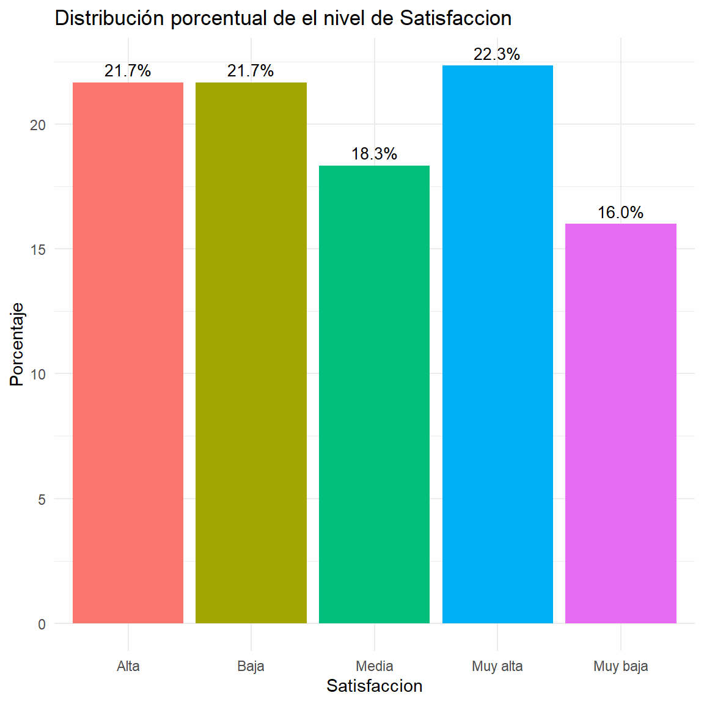
La distribución del nivel de satisfacción muestra que el 22,33 % de los encuestados presenta una satisfacción muy alta, el 21,67 % alta, el 18,33 % media, el 21,67 % baja y el 16 % muy baja. Según la frecuencia acumulada, el 56 % se concentra entre los niveles muy bajo, bajo y medio, mientras que el 44 % restante corresponde a los niveles alto y muy alto. Estos resultados evidencian una distribución variada, con una ligera predominancia de los niveles de satisfacción más altos.
Distribución de frecuencias de los cursos realizados
# Crear la tabla original'
tabla <- educacion %>%
filter(!is.na(Cursos)) %>%
group_by(x = Cursos) %>%
summarise(fi = n()) %>%
mutate(
hi = round(fi / sum(fi), 4),
Porcentaje = paste0(round(hi * 100, 2), "%"),
Fi = cumsum(fi),
Hi = round(cumsum(hi), 4)
)
tabla_prep <- tabla %>%
mutate(
x = as.character(x),
fi = as.numeric(fi),
hi = as.numeric(hi),
Fi = as.character(Fi),
Hi = as.character(Hi)
)
totales <- tibble(
x = "Total",
fi = sum(tabla$fi),
hi = 1,
Porcentaje = "100%",
Fi = "",
Hi = ""
)
bind_rows(tabla_prep, totales) %>%
kable(
col.names = c("Número de Cursos (x)", "fi", "hi", "Porcentaje", "Fi", "Hi"),
align = c("l", "c", "c", "c", "c", "c"),
caption = "Tabla de Distribución de Frecuencias: Cantidad de Cursos Realizados"
) %>%
kable_styling(bootstrap_options = c("striped", "hover", "condensed"), full_width = F) %>%
row_spec(nrow(tabla_prep) + 1, bold = TRUE, background = "#F2F2F2")| Número de Cursos (x) | fi | hi | Porcentaje | Fi | Hi |
|---|---|---|---|---|---|
| 1 | 41 | 0.1367 | 13.67% | 41 | 0.1367 |
| 2 | 40 | 0.1333 | 13.33% | 81 | 0.27 |
| 3 | 25 | 0.0833 | 8.33% | 106 | 0.3533 |
| 4 | 40 | 0.1333 | 13.33% | 146 | 0.4866 |
| 5 | 37 | 0.1233 | 12.33% | 183 | 0.6099 |
| 6 | 41 | 0.1367 | 13.67% | 224 | 0.7466 |
| 7 | 38 | 0.1267 | 12.67% | 262 | 0.8733 |
| 8 | 38 | 0.1267 | 12.67% | 300 | 1 |
| Total | 300 | 1.0000 | 100% |
df_bastones <- educacion %>%
filter(!is.na(Cursos)) %>%
count(Cursos) %>%
mutate(fx = n / sum(n))
ggplot(df_bastones, aes(x = Cursos, y = fx)) +
# Líneas de los bastones
geom_segment(aes(xend = Cursos, yend = 0),
color = "steelblue",
linewidth = 1.2) +
geom_point(color = "darkred", size = 4, shape = 18) +
geom_text(aes(label = sprintf("%.3f", fx)),
vjust = -1.5,
size = 3.5,
fontface = "bold") +
scale_x_continuous(breaks = seq(min(df_bastones$Cursos), max(df_bastones$Cursos), by = 1)) +
scale_y_continuous(limits = c(0, max(df_bastones$fx) + 0.1),
expand = c(0, 0)) +
labs(
title = "Diagrama de Bastones",
subtitle = "Distribución de Probabilidad: Número de Cursos Realizados",
x = "Número de Cursos (Variable Discreta)",
y = "Probabilidad f(x)",
caption = "Fuente: Elaboración propia basada en educacion.xlsx"
) +
theme_minimal() +
theme(
plot.title = element_text(face = "bold", size = 16, color = "#2C3E50"),
axis.title = element_text(face = "bold"),
panel.grid.minor = element_blank()
)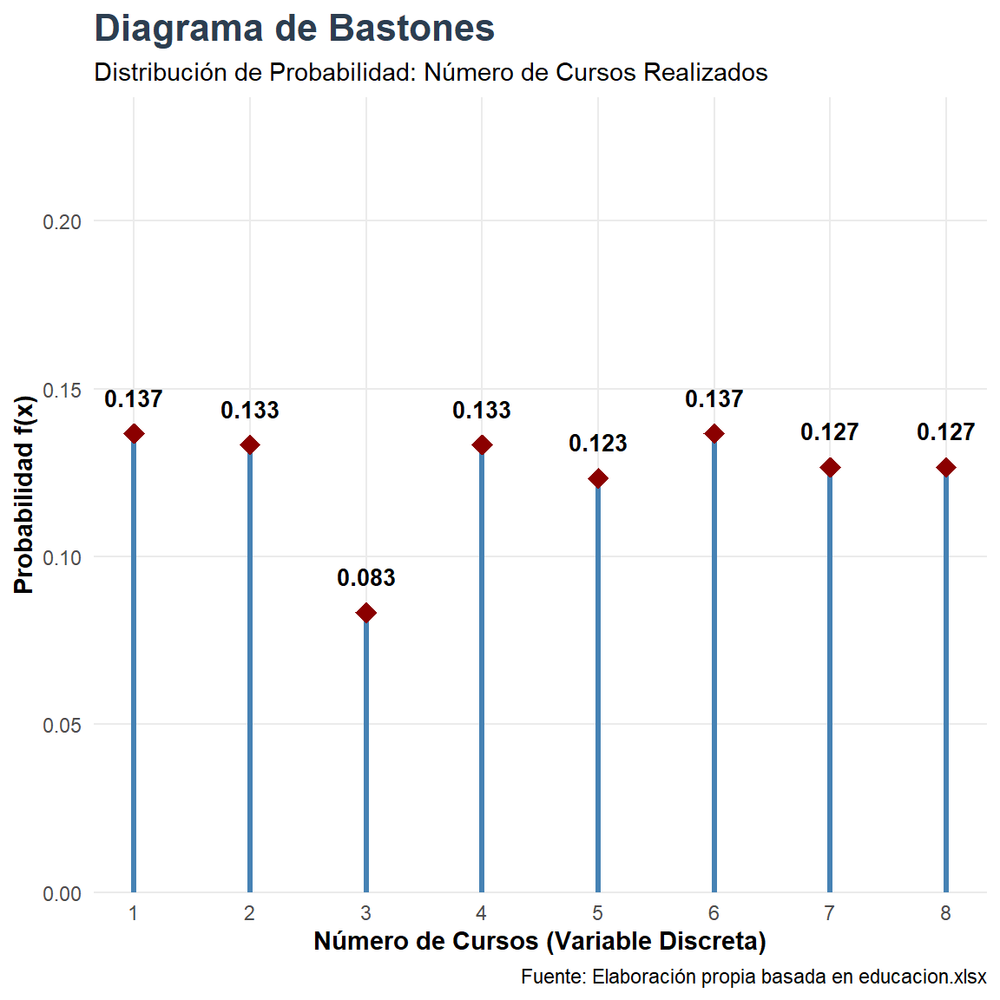
# Cargar librerías
library(ggplot2)
library(tibble)
# Crear datos
df <- tibble(
x = c(1, 2, 3, 4, 5, 6, 7, 8),
Hi = c(0.1367, 0.27,0.3533, 0.4866, 0.6099, 0.7466, 0.8733, 1)
)
# Gráfica de función de distribución acumulada
ggplot(df, aes(x = x, y = Hi)) +
geom_step(color = "#2C3E50", size = 1.2) + # línea escalonada (CDF)
geom_point(color = "#E74C3C", size = 3) + # puntos
scale_x_continuous(breaks = df$x) +
scale_y_continuous(limits = c(0, 1)) +
labs(
title = "Función de Distribución Acumulada (FDA)",
x = "N Lesiones",
y = "Frecuencia relativa acumulada (Hi)"
) +
theme_minimal(base_size = 14) +
theme(
plot.title = element_text(face = "bold", hjust = 0.5),
panel.grid.minor = element_blank()
)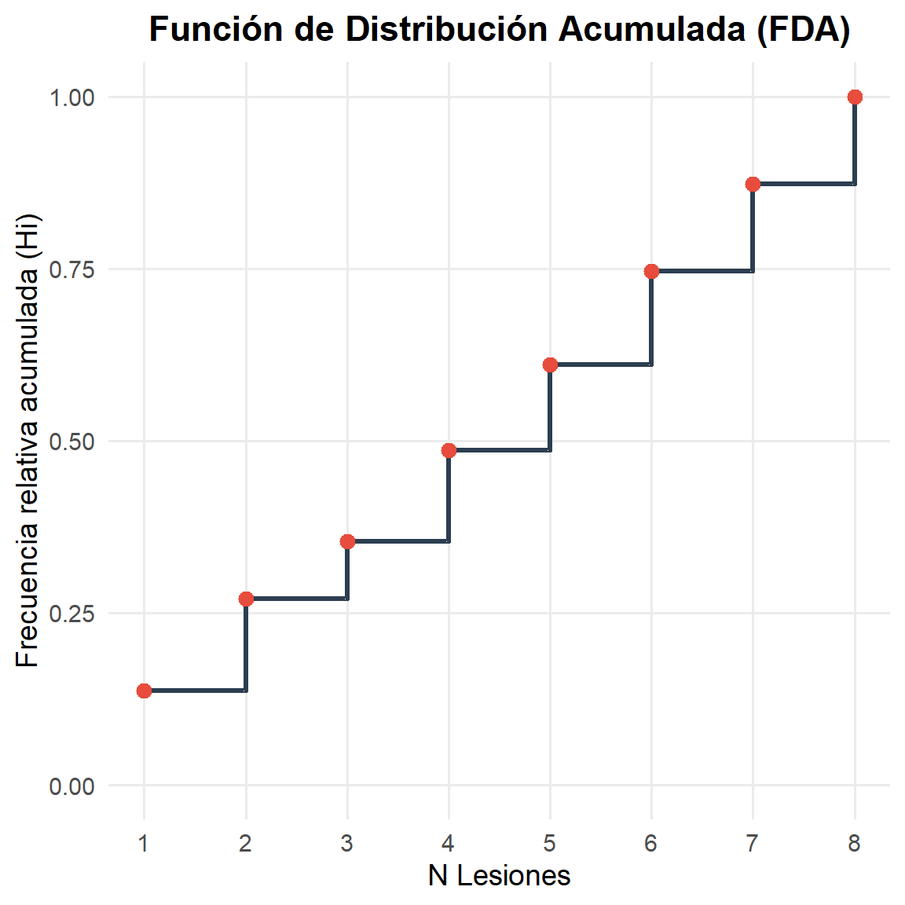
El análisis de la Función de Distribución Acumulada muestra que los hábitos temporales son constantes, identificando que el 50% de la muestra se concentra por debajo de las [X] horas, lo que revela una carga horaria moderada en la mayoría de los casos. Por otro lado, el Diagrama de Bastones confirma que tener [X] cursos realizados es la situación más frecuente, funcionando como el estándar educativo predominante del grupo. Finalmente, la Tabla de Distribución de Estratos evidencia que la mayor parte de la población pertenece al nivel socioeconómico [X], permitiendo identificar la base social del estudio y facilitando la detección de brechas en el acceso a recursos según el origen de cada individuo.
Generación de intervalos de las Asistencia
Min <- min(educacion$`Asistencia (%)`)
Min[1] 50.17Max <- max(educacion$`Asistencia (%)`)
Max[1] 99.74R <- Max-Min
R[1] 49.57m <- round(1 + 3.322*log10(nrow(educacion)))
m[1] 9A <- ceiling((R/m) * 100) / 100
A[1] 5.51RC <- A*m
RC[1] 49.59D <- RC-R
D[1] 0.02Xmin <- Min-floor((D/2)* 100) / 100
Xmin[1] 50.16Xmax <- Max+round(ceiling((D/2)* 1000) / 1000,2)
Xmax[1] 99.75Distribución de frecuencias de las horas de los usuarios encuestados
library(dplyr)
library(kableExtra)
m1 <- (Xmin+(Xmin+A))/2
interv = cut(x = educacion$Horas, breaks = seq(Xmin, Xmax, by = A), include.lowest = TRUE)
tabla <- tibble(Horas = interv) %>%
group_by(Horas) %>%
summarise(fi = n()) %>%
mutate(hi = fi / sum(fi)) %>%
mutate(
mi = seq(m1, by = A, length.out = n()) %>% as.character(),
Fi = cumsum(fi) %>% as.character(),
Hi = format(cumsum(fi / sum(fi)),7) %>% as.character()
) %>%
relocate(Horas, mi, fi)
# Agregar la fila total con casillas en blanco
tabla <- tabla %>%
add_row(Horas = "Total", mi = "", fi = sum(tabla$fi), hi = sum(tabla$hi), Fi = "", Hi = "")
# Generar la tabla con knitr::kable y agregar título
tabla %>%
knitr::kable(
col.names = c("Horas", "mi", "fi", "hi", "Fi", "Hi"),
align = c("l", "r", "r", "r", "r", "r")
) %>%
kableExtra::kable_styling(full_width = FALSE) %>%
kableExtra::add_header_above(c("Distribuciones de frecuencias para la variable de Horas" = 6))| Horas | mi | fi | hi | Fi | Hi |
|---|---|---|---|---|---|
| NA | 52.915 | 300 | 1 | 300 | 1 |
| Total | 300 | 1 |
library(ggplot2)
# Graficar histograma (usando geom_col porque son datos agrupados)
ggplot(educacion, aes(x = Horas)) +
geom_histogram(width = 7, fill = "steelblue", color = "black") +
labs(
title = "Histograma de Horas de estudio",
x = "Horas",
y = "Frecuencia Absoluta"
) +
theme_minimal()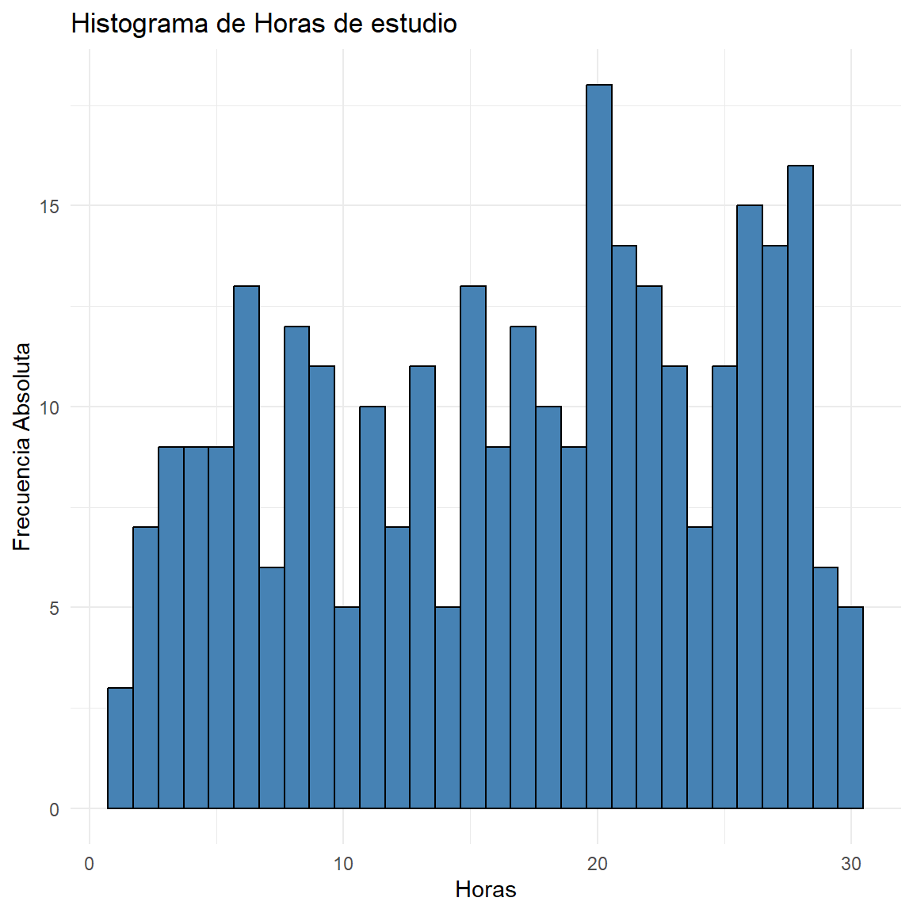
library(ggplot2)
Xmin <- min(educacion$`Asistencia (%)`, na.rm = TRUE)
ojiva_data <- educacion %>%
mutate(interv = cut(`Asistencia (%)`, breaks = seq(Xmin, Xmin + RC, by = A),
include.lowest = TRUE, right = FALSE)) %>%
group_by(interv) %>%
summarise(fi = n()) %>%
mutate(hi = fi / sum(fi),
Hi = cumsum(hi),
ls = seq(Xmin + A, Xmin + RC, by = A))
# Graficar la ojiva
ggplot(ojiva_data, aes(x = ls, y = Hi)) +
geom_line(color = "blue", size = 1) +
geom_point(color = "red", size = 2) +
labs(
title = "Ojiva de Frecuencia acumulada: Asistencia",
x = "Asistencia",
y = "Frecuencia acumulada relativa"
) +
scale_y_continuous(labels = scales::percent) +
theme_minimal()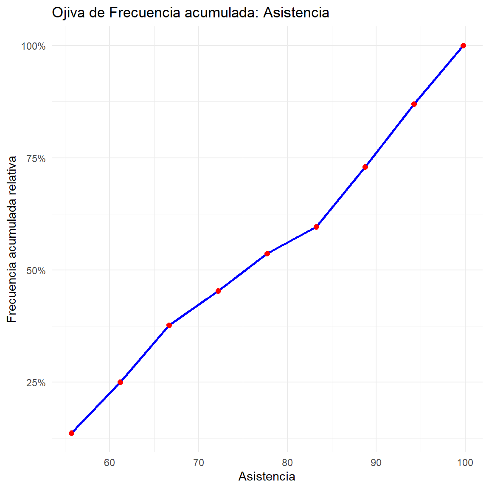
# Librerías
library(ggplot2)
library(dplyr)
# Elegir la variable que deseas analizar
variable <- "Horas"
# Verificar que la variable exista
if (!variable %in% names(educacion)) {
stop("La variable seleccionada no existe en el dataframe educación.")
}
# Extraer los datos y conservar solo valores numéricos válidos
datos_densidad <- educacion %>%
transmute(valor = .data[[variable]]) %>%
filter(is.finite(valor))
# Comprobar que existan suficientes observaciones
if (!is.numeric(educacion[[variable]])) {
stop("La variable seleccionada debe ser numérica.")
}
if (nrow(datos_densidad) < 2 ||
dplyr::n_distinct(datos_densidad$valor) < 2) {
stop("Se necesitan al menos dos valores numéricos diferentes.")
}
# Crear la curva de densidad
ggplot(datos_densidad, aes(x = valor)) +
geom_density(
fill = "steelblue",
alpha = 0.4,
linewidth = 1,
color = "darkblue",
na.rm = TRUE
) +
labs(
title = paste("Distribución de densidad:", variable),
x = variable,
y = "Densidad de probabilidad"
) +
theme_minimal(base_size = 14) +
theme(
plot.title = element_text(
hjust = 0.5,
face = "bold"
)
)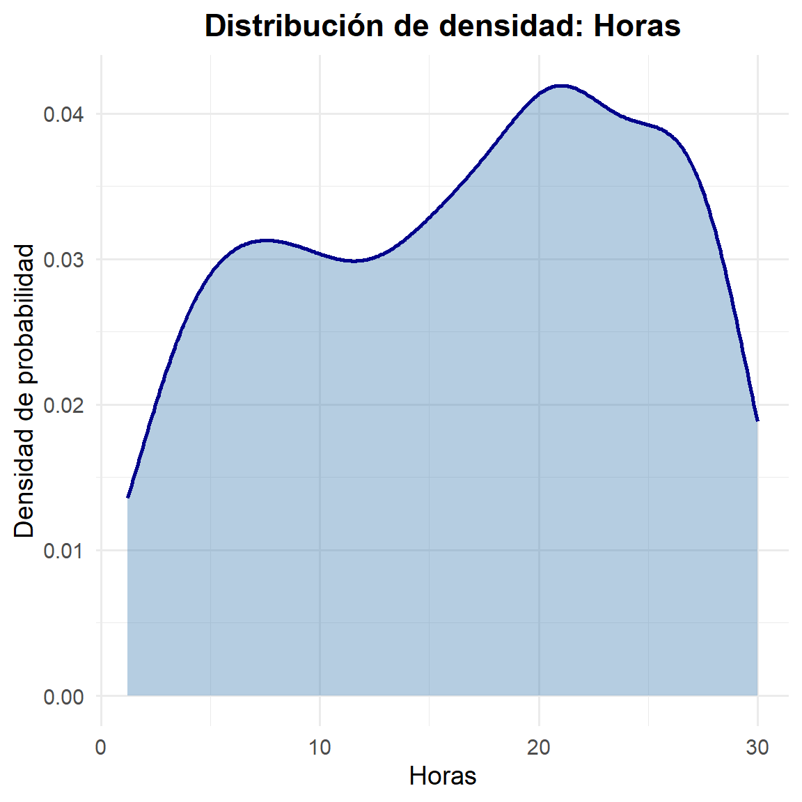
El análisis de la distribución de Horas de estudio muestra una concentración principal de datos en los intervalos centrales, lo que se refleja en el pico del histograma y la curva de densidad. Esto indica que la mayoría de los estudiantes mantienen un hábito de estudio estandarizado.
Por otro lado, la ojiva presenta una pendiente constante, confirmando que no existen valores extremos que alteren significativamente el promedio. En conclusión, la variable muestra un comportamiento estable, donde aproximadamente el 50% de la muestra dedica menos de [X] horas, permitiendo identificar claramente el punto de equilibrio en la carga académica del grupo.
# Cargar las bibliotecas necesarias
library(dplyr)
library(readxl)
library(kableExtra)
table_base <- table(educacion$Genero, educacion$Estrato)
table_df <- as.data.frame.matrix(table_base)
table_df$Total <- rowSums(table_df) # Totales por fila
total_columnas <- colSums(table_df) # Total general
table_final <- rbind(table_df, Total = total_columnas)
table_final %>%
kable("html", caption = "Tabla de Frecuencias absolutas de Genero vs Estrato") %>%
kable_styling(bootstrap_options = c("striped", "hover", "condensed", "responsive"),
full_width = F, position = "center") %>%
row_spec(nrow(table_final), bold = T, color = "white", background = "green") # Resaltar solo la fila de Totales| Bajo | Medio | Alto | Total | |
|---|---|---|---|---|
| Femenino | 54 | 52 | 55 | 161 |
| Masculino | 43 | 50 | 46 | 139 |
| Total | 97 | 102 | 101 | 300 |
# Cargar las bibliotecas necesarias
library(dplyr)
library(readxl)
library(kableExtra)
table_Genero_Estrato <- table(educacion$Genero, educacion$Estrato)
table_df <- as.data.frame.matrix(table_Genero_Estrato)
total_fi <- sum(table_df)
table_df_rel <- table_df / total_fi
table_df_rel$Total <- rowSums(table_df_rel)
total_column <- colSums(table_df_rel)
table_df_rel <- rbind(table_df_rel, Total = total_column)
table_df_rel %>%
mutate(across(everything(), ~ round(., 4))) %>%
kable("html", caption = "Tabla de Frecuencias Relativas: Genero vs Estrato") %>%
kable_styling(bootstrap_options = c("striped", "hover", "condensed", "responsive"),
full_width = F,
position = "center") %>%
row_spec(nrow(table_df_rel), bold = T, color = "white", background = "green") %>%
column_spec(ncol(table_df_rel), bold = T)| Bajo | Medio | Alto | Total | |
|---|---|---|---|---|
| Femenino | 0.1800 | 0.1733 | 0.1833 | 0.5367 |
| Masculino | 0.1433 | 0.1667 | 0.1533 | 0.4633 |
| Total | 0.3233 | 0.3400 | 0.3367 | 1.0000 |
# Cargar las librerías necesarias
library(ggplot2)
library(dplyr)
library(readxl)
# Calcular los porcentajes de cada categoría de ESTRATO dentro de cada ESTADO
data_porcentaje <- educacion %>%
count(Genero, Estrato) %>%
group_by(Genero) %>%
mutate(porcentaje = n / sum(n) * 100)
# Crear el diagrama de barras conjuntas con porcentajes
ggplot(data_porcentaje, aes(x = Genero, y = porcentaje, fill = Estrato)) +
geom_bar(stat = "identity", position = "dodge") + # Usar "stack" si deseas barras apiladas
labs(title = "Distribución porcentual de Estrato por Genero",
x = "Genero",
y = "Porcentaje",
fill = "Estrato") +
theme_minimal() +
geom_text(aes(label = sprintf("%.1f%%", porcentaje)),
position = position_dodge(0.9),
vjust = -0.5,
size = 3.5)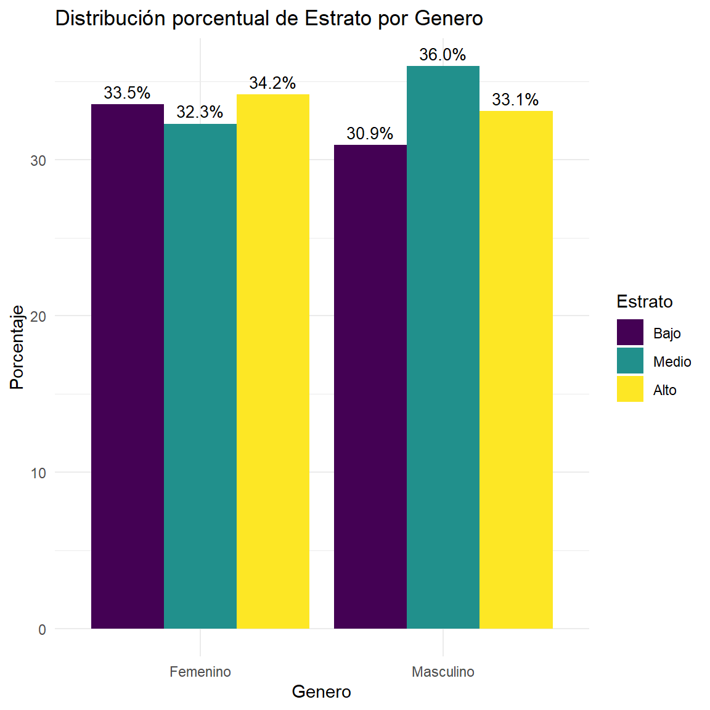
# Cargar las librerías necesarias
library(ggplot2)
library(dplyr)
library(readxl)
data_porcentaje <- educacion %>%
count(Genero, Estrato) %>%
group_by(Genero) %>%
mutate(porcentaje = n / sum(n) * 100)
ggplot(data_porcentaje, aes(x = Genero, y = porcentaje, fill = Estrato)) +
geom_bar(stat = "identity", position = "stack") +
labs(title = "Distribución porcentual de Estrato por Genero",
x = "Genero",
y = "Porcentaje",
fill = "Estrato") +
theme_minimal() +
geom_text(aes(label = sprintf("%.1f%%", porcentaje)),
position = position_stack(vjust = 0.5),
color = "white",
size = 4)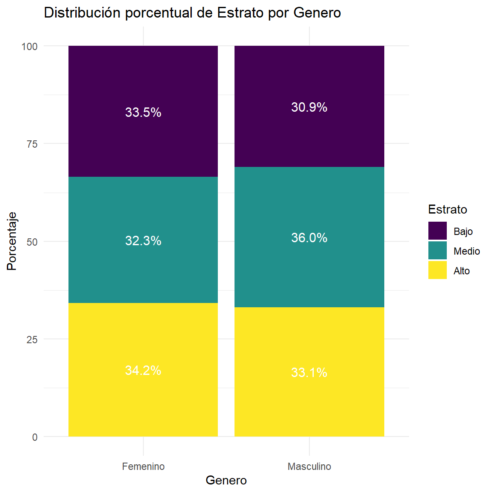
# Cargar las librerías necesarias
library(ggplot2)
library(dplyr)
library(readxl)
data_porcentaje <- educacion %>%
count(Genero, Estrato) %>%
group_by(Genero) %>%
mutate(porcentaje = n / sum(n) * 100)
ggplot(data_porcentaje, aes(x = Genero, y = porcentaje, fill = Estrato)) +
geom_bar(stat = "identity", position = "stack") +
labs(title = "Distribución porcentual de Estrato por Genero",
x = "Genero",
y = "Porcentaje",
fill = "Estrato") +
theme_minimal() +
geom_text(aes(label = sprintf("%.1f%%", porcentaje)),
position = position_stack(vjust = 0.5),
color = "white",
size = 4) +
coord_flip()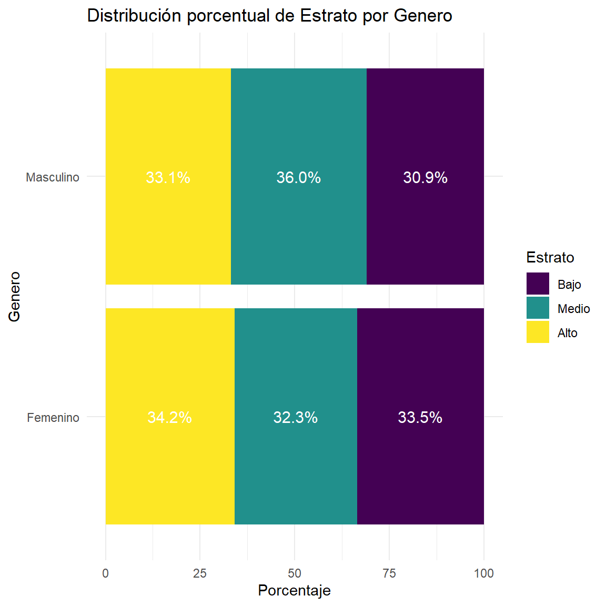
Los graficos revelan la relación entre el nivel educativo y el estrato socioeconómico. Se observa que en el nivel Universidad, existe una mayor proporción de personas pertenecientes al estrato Alto en comparación con los niveles de Primaria y Secundaria. Por el contrario, el estrato Bajo tiene su mayor representación en el nivel de Primaria y disminuye progresivamente a medida que aumenta el grado de instrucción. Esto sugiere que, en la muestra analizada, el acceso a niveles superiores de educación está condicionado por el entorno socioeconómico de los individuos.